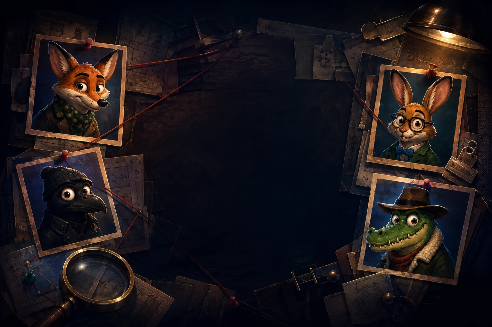
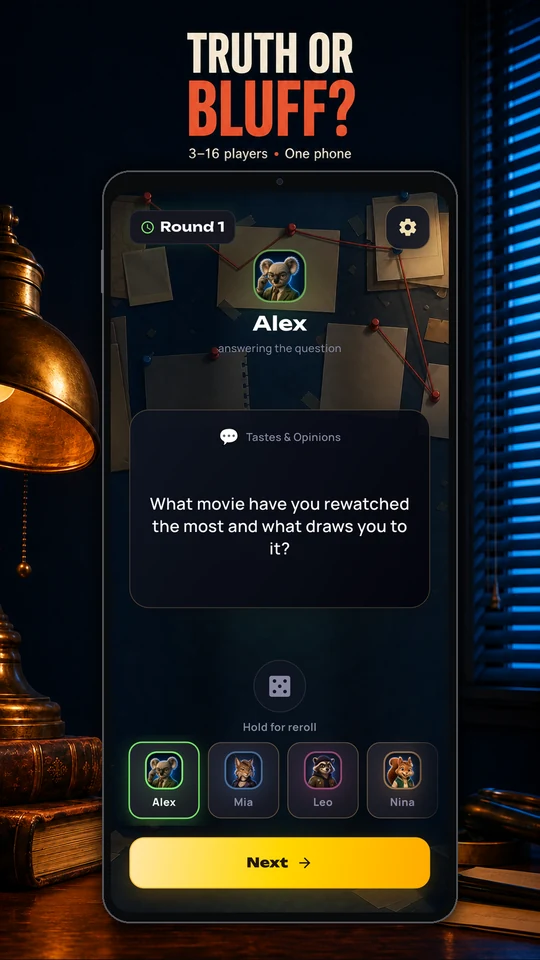
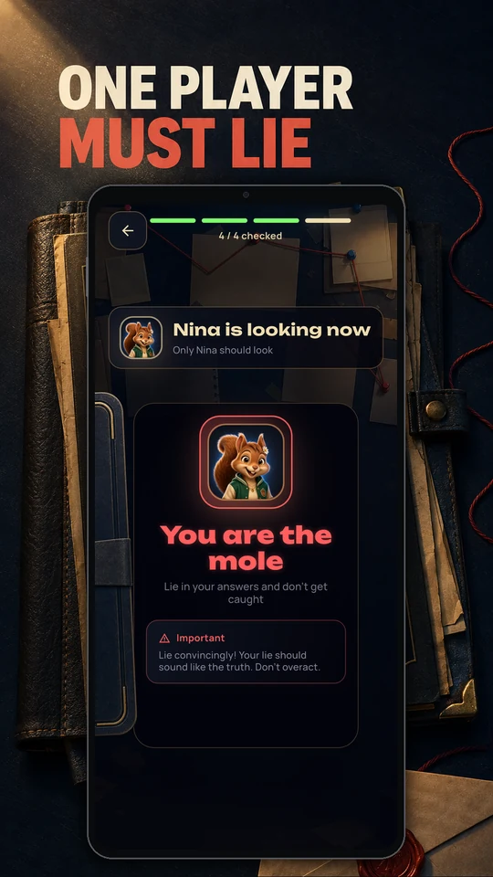
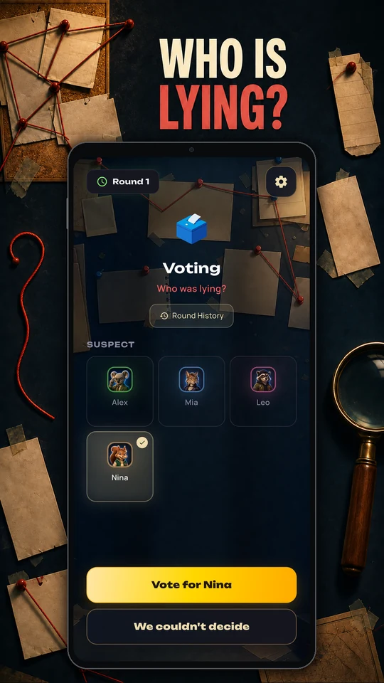
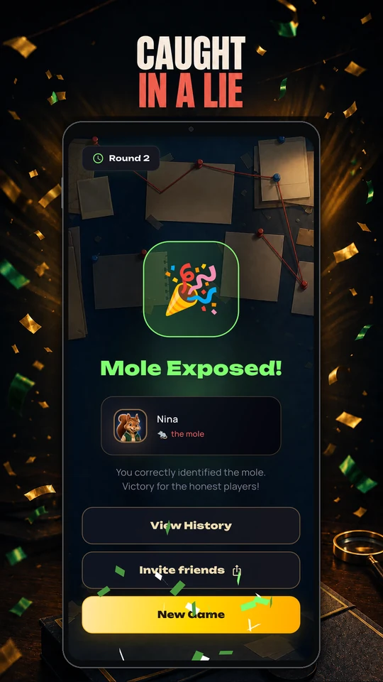
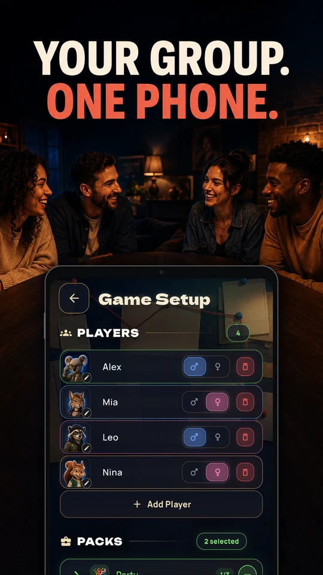
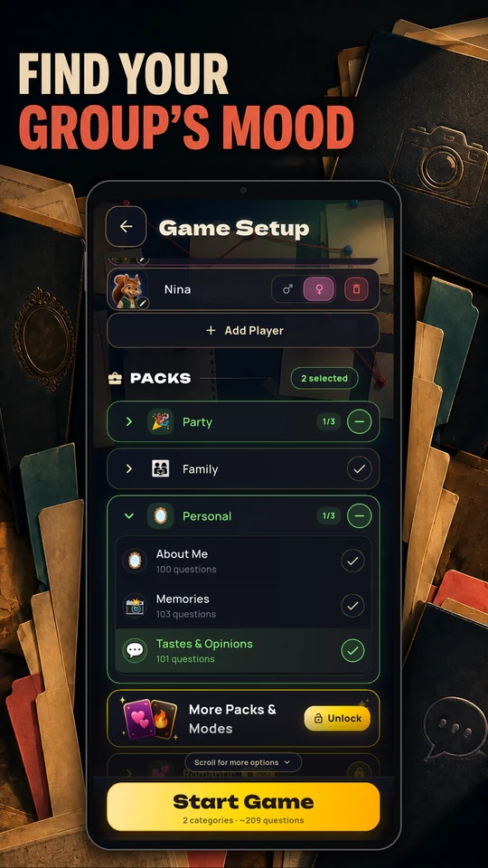
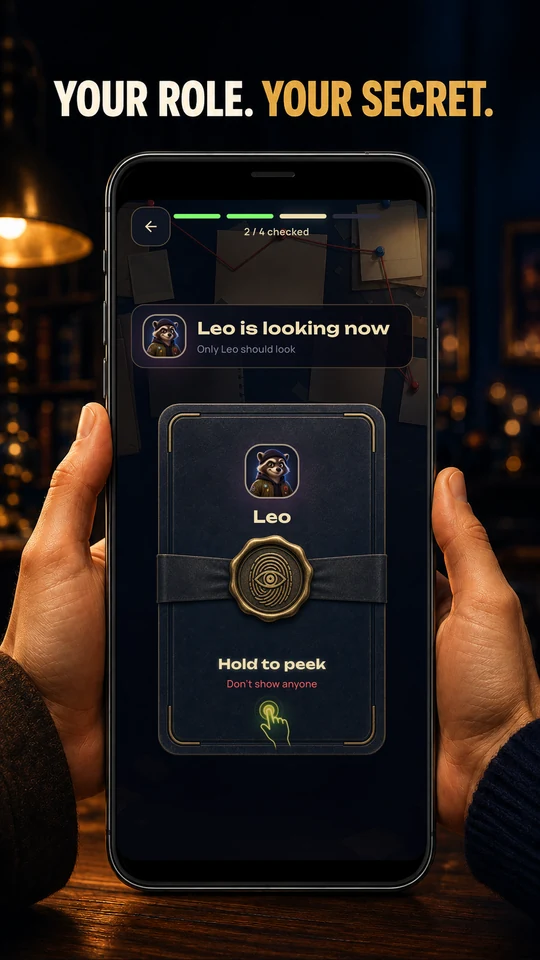
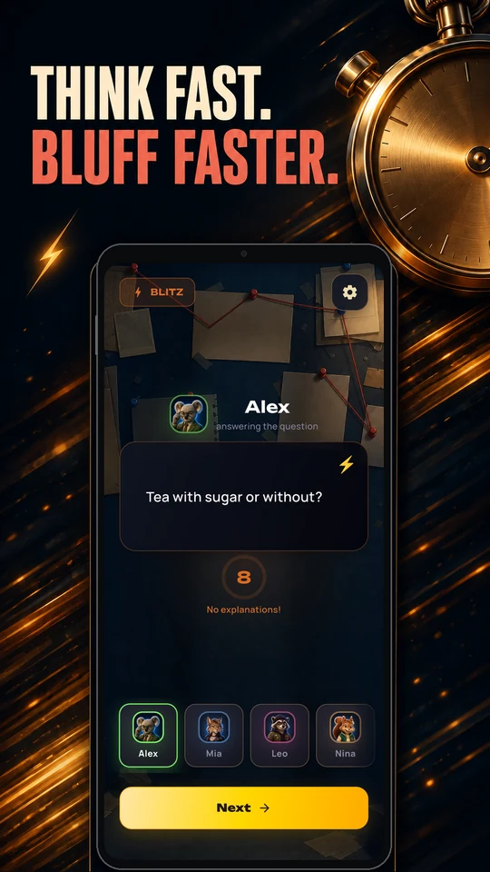

Answer your prompt
Pass the device around. Read your prompt and give the group your answer.
One phone. A room full of suspects.
Tell the truth, sell a believable lie, and find out how well you really know your friends.
Made by Andy & Nata, published by Little Brush Games. Press kit ↗


How to play
Pass the phone. Read the room.
Trust no one too quickly.
Pass the device around. Read your prompt and give the group your answer.
Honest players tell the truth. If you're the hidden Mole, make your lie sound convincing.
Compare stories, question the answers, and vote. Did you catch the Mole?
Inside the game








Scroll to explore · Select a screen for a closer look
A twist in the story
Pick your question packs and mix things up.
Optional twists add another layer to the stories around the table.
Bring a second hidden Mole into the round. Who is covering for whom?
Finish with a final Blitz round and see who can think on their feet.
Before the first accusation
A pass-and-play party game of hidden roles and believable lies. Most players answer truthfully. The Mole bluffs, and the group discusses and votes to find the liar.
No. The whole group shares one phone or tablet and passes it from player to player. One device, 3–16 players.
The Mole gives a believable lie when answering their prompt, then tries to survive the group vote. Honest players answer truthfully.
The Android version is out now on Google Play. The iOS version is in development; it is not available yet.
English, German, and Russian.
Truth or Mole is free to download, with an optional subscription. See Google Play for the current subscription terms and offers.
Truth or Mole is rated 16+.
For help with the game, email support@littlebrushgames.com.
There's only one way to find out. Available now on Android.
{kind=link}
{kind=link}
{kind=link}
{kind=link}
{kind=link}
{kind=link}
{kind=link}
{kind=link}